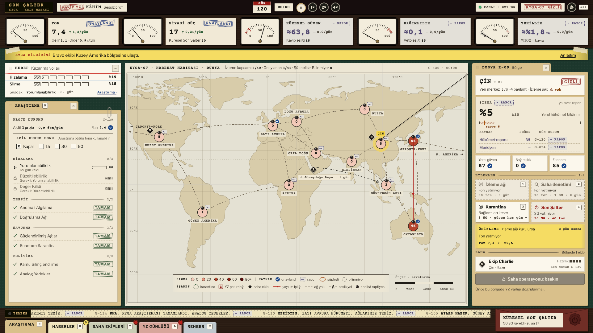

Fon her işin bedelini öder. Siyasi Güç sert kararlar için gerekir ve zamanla birikir. Küresel Güven 15'in altına inerse ittifak dağılır. Bağımlılık yükselirse bölgeler kararlarını veto eder. Tekillik 100'e ulaşırsa kaybedersin.
Kabul etmek ekonomiyi büyütür, ama bölgeye sızma taşır ve bağımlılığı artırır.